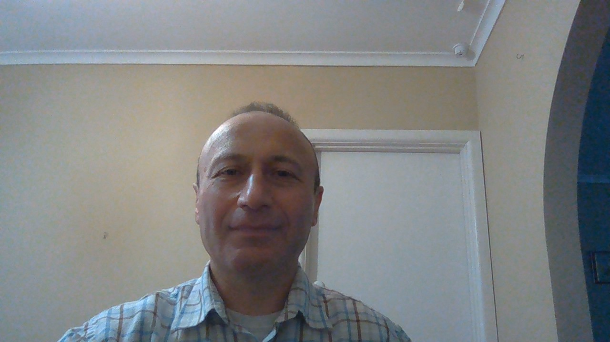

About Me
Web Developer leveraging a background in software development to build robust applications on the web. Recently earned a certificate in Full Stack Development from the Monash University of Melbourne, with newly developed skills in JavaScript, CSS, HTML, Node.js, React.js and responsive web design. Self-motivated and driven problem-solver passionate about clean and structured coding, with great attention to details. With each project, my aim is to build easily maintainable application and give more flexibility to the end user. I applied aspects of agile development in a project where I worked in a team of four to develop New York Times Search application that uses Application Programming Interface to extract information from the server within given criteria. Excited to apply my skills in the future as part of a fast-paced, quality-driven team in order to build software for high customer satisfaction.